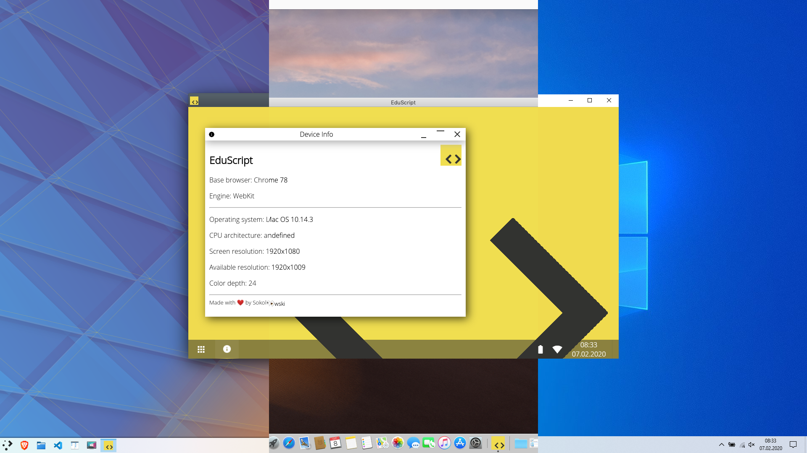
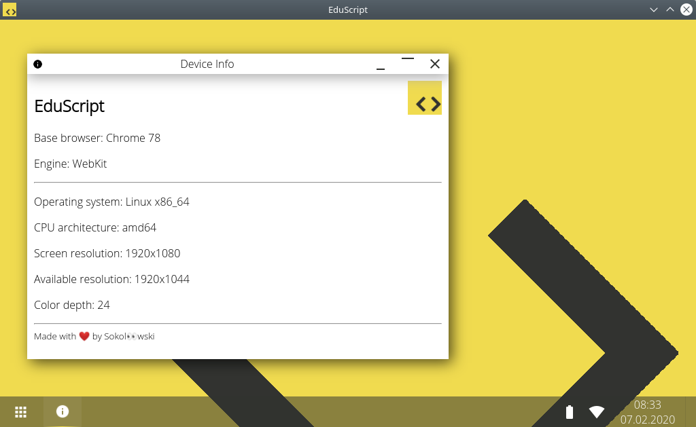
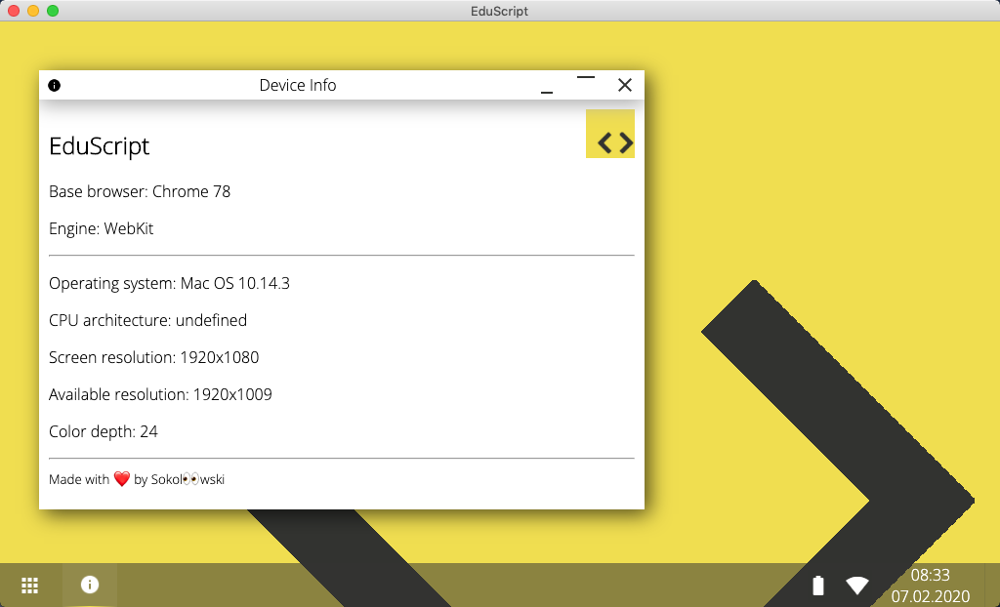
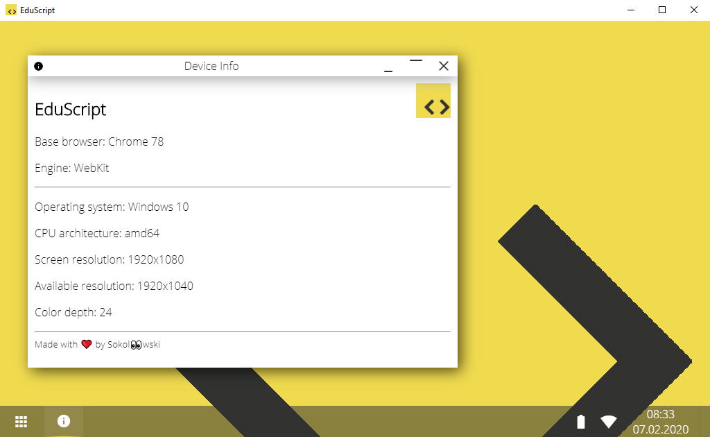

EduScript na IX Pikniku Naukowym w Elektryku!
Po paru poprawkach całej masie poprawek w kodzie, zdecydowałem się zgłosić EduScript na Piknik. Liczę na zainteresowanie
projektem ze względu na jego walory edukacyjne, został stworzony, by pomóc w nauce programowania od podstaw. Po prezentacji projektu na
Pikniku, zostanie on udostępniony w formie aplikacji na systemy Linux, macOS i Windows. Na wszystkich trzech wygląda tak samo dobrze!




Powrót do projektu
Po wycofaniu EduScriptu z VIII Pikniku Naukowego została wysłana dokumentacja na Olimpiadę Innowacji Technicznych, gdzie projekt nie zdobył
żadnego miejsca ani wyróżnienia. Prace zostały wstrzymane z powodu braku czasu na ciągłe poprawki i szlify. Po kilkumiesięcznej przerwie,
EduScript zaczął działać, zniknęła jednak wersja webowa. Bardzo pomocna okazała się dokumentacja wysłana na OIT, bez której
najprawdopodobniej nie zdecydowałbym się na próbę poprawienia projektu
.png)
EduScript na Olimpiadzie Innowacji Technicznych
Mimo licznych niedociągnięć i wielu problemów z prawidłowym działaniem, zdecydowałem się na wysłanie dokumentacji projektu na Olimpiadę
Innowacji Technicznych. EduScript będzie walczył o nagrodę w kategorii pomoc dydaktyczna. Kopia wysłanych dokumentów dostępna jest
poniżej
Dokumentacja (pdf)
WYCOFANIE PROJEKTU
Zdecydowałem wycofać EduScript z Pikniku Naukowego z powodu braku czasu na przygotowanie działającej wersji programu. Mimo to mam nadzieję,
że projekt wkrótce zacznie działać i odnosić sukcesy w licznych konkursach z zakresu informatyki, programowania i edukacji
Zobacz starszą wersję
EduScript zgłoszony do udziału w VIII Pikniku Naukowym!
Z przyjemnością ogłaszam, że edukacyjny projekt EduScript, środowisko do nauki programowania, został zgłoszony do udziału w VIII Pikniku
Naukowym w Elektryku. Liczę na sukces projektu oraz zainteresowanie zarówno ze strony uczniów, jak i nauczycieli informatyki i przedmiotów
zawodowych związanych z programowaniem i tworzeniem stron internetowych
Wersja demo